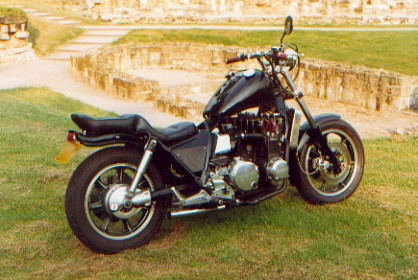
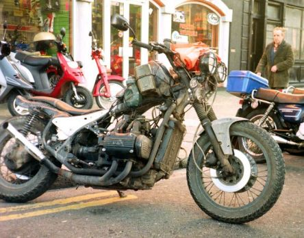
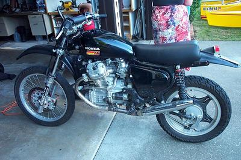

a rat/chopper page
Z1300 chopper:

from Z1300.co.uk
|
This one is a good example ... that enormous, stupid Z1300 engine out
on display, a nice balance of black and chrome and a neat, minimal tail.
I like the way you can see right through it on top of the engine
cases. Must be running pod filters or something.
The tiny tank is a bit scary though. I mean, it's a 1300/6!
Maybe you could squeeze a secondary tank under the seat somehow,
but I imagine the space is fairly full of black boxes, battery, etc.
|
Rat Wing:

from Ratbike.org
|
This one really caught my eye, too. Similarly, this has got the
engine on display and that 'gappy' look. That seat is maybe a
tad too minimal though!
Sadly, all I know about it is that it's a Goldwing, it's in
Dublin (maybe), and it's illegally parked ... ;-)
|
CX

by Chris Denzler
| |
It doesn't have to be sleek or rare or expensive ... even the
humble CX500 has chop potential, in this case into an
Enduro CX.
Terrifying.
| |